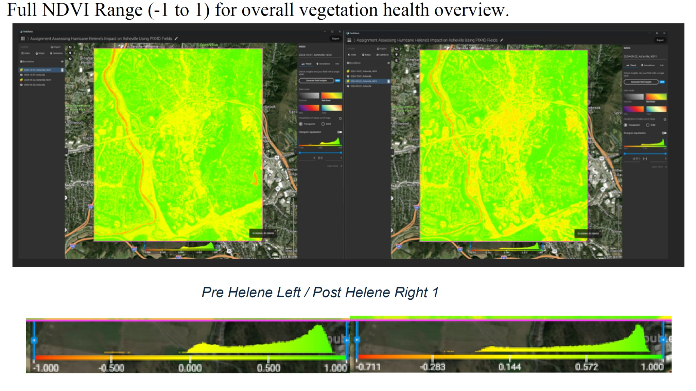
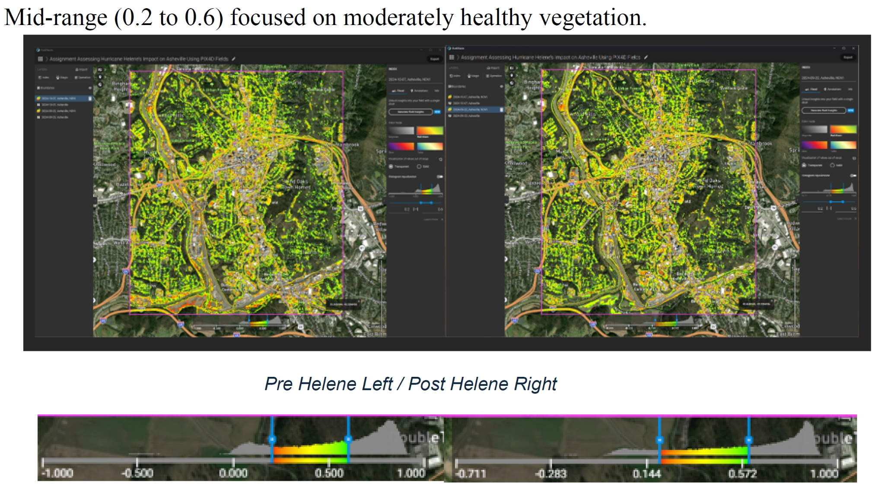
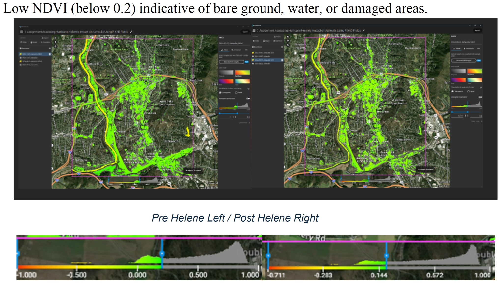

NDVI | PIX4D Fields | Remote Sensing | Disaster Impact Analysis
This project evaluated vegetation health and potential storm-related impacts following Hurricane Helene in Asheville, North Carolina. The analysis compared NDVI maps generated from pre- and post-hurricane satellite imagery to identify changes in vegetation condition and possible environmental disturbance.
The project demonstrates the use of remote sensing workflows for post-disaster environmental assessment, vegetation monitoring, and change detection.
Asheville, North Carolina was selected as the Area of Interest. Satellite imagery was processed in PIX4D Fields for two dates: September 22, 2024 before Hurricane Helene and October 7, 2024 after the storm.
NDVI maps were generated for both dates. The analysis examined the full NDVI range from -1 to 1, a mid-range from 0.2 to 0.6 representing moderately healthy vegetation, and low NDVI values below 0.2 that may indicate bare ground, water, or damaged areas.

The full NDVI range from -1 to 1 provided an overview of vegetation health across the study area before and after the storm.

Mid-range NDVI values were used to focus on moderately healthy vegetation and compare vegetation patterns before and after Hurricane Helene.

Low NDVI values below 0.2 were evaluated as potential indicators of bare ground, water, damaged vegetation, or other disturbed surfaces.